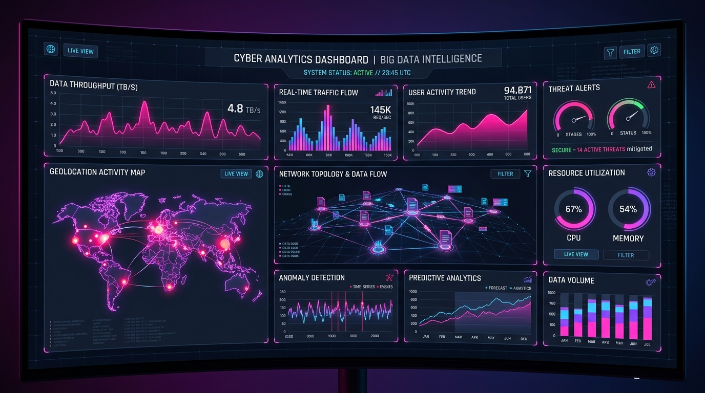

Staj Projesi
Büyük Veri Analiz & KPI Takip Paneli
Staj sürecimde ham kurumsal verilerin toplanması, ayıklanması ve karar alıcılar için dinamik gösterge panelleri (dashboard) haline getirilmesi çalışması. Müşteri davranış trendleri ve performans metrikleri analiz edilerek görselleştirildi.
Python
Pandas
SQL
Power BI